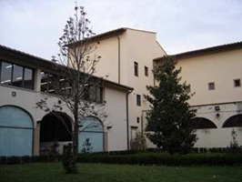
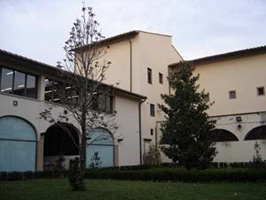

● 已获得学士学位、45岁以下的往届本科毕业生专业
● 确定在2012年7月前能获得学士学位的应届本科毕业生
● 本科专业不限
中国人民大学简称：人民大学、人大，是中国一所重点大学，在文、法、哲等多领域国内领先。除此之外，它近来还在理工科发展方面努力取得重大进步。人大的前身是在抗日战争时期创办于延安的陕北公学，后历经华北联合大学、北方大学、华北大学等时期，最终于1950年定校址于北京，定名“中国人民大学”，成为新中国的第一所综合性国立大学。长期以来，该学府为中国培养了大量领袖人才和社会精英。现时，以“国民表率，社会栋梁”为学校培养学生的目标。
佛罗伦萨大学是一所崭新却拥有古老历史的大学。始建于1321年，初名Studium florentinum。通过1923年的一条法律正式更名为佛罗伦萨大学。佛罗伦萨大学是意大利著名的大学，不仅有着辉煌的过去，而且也是重要的现代化高等学府。
佛罗伦萨大学共有6万余名学生，其中一万三千余人是入学新生。35％的入学新生来自于佛罗伦萨省, 38％来自托斯卡纳以外的省, 22％来自于意大利各区，约有5％来自其他国家。学校教职工和研究生超过2300人, 技术和管理人员将近1800余人。 佛罗伦萨大学有12个学院，开设104门学士学位课程，102门硕士学位课程，6门本硕连读课程，110门博士课程，此外还有众多的进修课程。 1999年佛罗伦萨大学被欧盟授予“欧洲杰出的科研教学中心”的称号，以表彰在欧洲一体化进程中在教学领域做出的专业性贡献。此外，佛罗伦萨大学还有世界上150个知名大学签订了科研与教学合作协议。
为引进国外优质教育资源，促进中意两国教育合作与交流，2010年意大利佛罗伦萨大学与中国人民大学继续开展硕士合作项目。本项目致力于培养全球经济一体化急需的金融、保险、精算、企业管理与风险管理、能源管理、国际经济比较方面的高级国际型专门人才。
2010年是中意建交四十周年，意大利成功举办了“中国文化年”系列活动，两国高层领导人频繁互访，引起国际社会高度重视。中意两国势必会在多领域继续深入交流与合作，具备中意两国文化背景的专业人才也将成为社会急需的国际化人才。
本专业是为塑造在金融，精算，养老基金和风险管理等领域的专家而设立，培养学生在欧洲各国以及与欧洲外各国家间进行实际经济操作的特殊专门能力。
银行及银行附属机构，信托公司，保险公司等等在过去的十年间对人才的渴望达到了极致，他们急切的需要有扎实的专业知识与出色的金融分析能力的毕业生能加入银行，保险，风险管理部门。在意大利过去十年中，银行业，信托业，保险业及企业风险管理部门对不同文化背景的毕业生的需求也呈几何级数的形式在增长。而由佛罗伦萨大学经济学院及CISA中心设立的BAMF课程很好的满足了市场的需求，配合以强大的师资力量与优秀的教学环境，使得本项目的毕业硕士就业前景非常广阔。毕业生们可以选择的就业领域包括：信托机构、保险公司、咨询业、大中型工业企业、商业银行、金融经济实体、公共金融保险服务公司、退休基金部门以及大中型规模从事金融与风险管理、能源管理部门、能源企业、跨国企业等。
银行，保险及金融市场（即金融保险精算与风险管理）
Banca, Assicurazioni e Mercati Finanziari即BAMF
报名所需材料：
往届毕业生：填写报名申请表，提交身份证、大学本科毕业证书、学士学位证书、本科成绩单复印件各一份，一寸彩色照片2张；
应届毕业生：填写报名申请表，提交身份证、学生证复印件，一寸彩色照片2张。
● 报名时间：2011年十月班报名于9月26日截止（名额有限，报名从速）
● 联 系 人：刘老师
● 联系电话：010－57160798 / 82500131 /15321530798
● 网 址：http://italy.ruconline.com
● 电子邮件：rucitaly@gmail.com
● 地 址：中国人民大学明德主楼1008 （ 中国人民大学统计学院中意项目组 ）
北京学生直接至人大报名
外地学生将报名资料邮寄、报名费邮政汇款至
* 地址：北京市中国人民大学明德主楼1008室统计学院中意项目组 刘颖老师收
* 邮编：100086
* 电话：15321530798
注：写明报名学生姓名和联系电话，寄出后告知老师注意查收。
● 报名费：500元人民币
● 学费：3500欧元/学年
● 学制：三学年
● 国内生活费用自理
● 争取意大利政府资助免国外食宿费用或获得相当的补贴
● 学生福利：为学生办理交通月票（每年10欧元以内），可协助经济有困难的学生申请助学金
|
|
|||||||||||||||
|
Insegnamento 教学课程设置 |
CFU 学分 |
|
第一学年课程（人大） |
（18） |
|
意大利语 |
|
|
Statistica applicata per la banca e le assicurazioni 银行保险统计学应用 |
9 |
|
Laboratorio
informatico 信息实验室课程 |
3 |
|
Teoria del
rischio e tecniche attuariali contro i Danni 财产保险的精算技术及风险理论 |
6 |
|
INSEGNAMENTI 第一学年课程（意大利） |
(45) |
|
Analisi
dei mercati finanziari 金融市场分析 |
9 |
|
Calcolo
della probabilita’ e statistica 概率统计计算 |
6 |
|
Modelli
econometrici e metodi numerici 计量模型与数字方法 |
6 |
|
Corporate
and investment banking 投资银行学 |
6 |
|
Diritto
bancario, finanziario e delle assicurazioni 银行，金融与保险法 |
6 |
|
Economia
dell'informazione e dei contratti 信息与合同经济学 |
12 |
|
INSEGNAMENTI 第二学年课程 |
(57) |
|
Metodi
per l’analisi 风险分析与证券管理 |
9 |
|
Tecniche
finanziarie ed attuariali per i Fondi Pensione 退休基金的金融精算技术 |
9 |
|
Tecnica
delle Assicurazioni vita 人寿保险技术 |
9 |
|
Libera
Scelta 自由选修 |
6 |
|
Laboratorio/Tirocini实验室/实习 |
3 |
|
Prova
finale最终考试成绩 |
21 |
|
TOTALE GENERALE
满分 |
120 |
佛罗伦萨大学CISA中心保留根据学年进度对课程进行微调的权利
● 统计学：《统计学》（第三版），贾俊平、何晓群、金勇进，中国人民大学出版社 2007.1
● 概率与数理统计：《概率论与数理统计》（第三版），茆诗松、周纪芗，中国统计出社 2007.12
● 数学：《经管类高等数学》，崔西玲，高等教育出版社 2006.1
● 经济学：《经济学原理》(宏观经济学分册)（第4版)，N.格里高利•曼昆著，梁小民、陈宇峰译，北京大学出版社 2007.3
修满规定课程，并且通过毕业论文答辩，可获得佛罗伦萨大学的银行，保险及金融市场学硕士学位。
根据中意两国2005年签署的互相承认两国高等教育学历的声明，本专业在意大利学习为期两年，120学分等同于国内的硕士学位文凭，在欧洲乃至全球范围内可获得认同。
在意大利的留学生目前为止还远远不能满足市场需求，而随着中国与意大利政府间交流的加强，两国之间的贸易往来正在变得越来越频繁，这些都为在意大利系统学习银行保险及金融市场学的中国学生提供了宽广的舞台和大量的就业机会。
请咨询招生老师
提供与意大利各大保险公司在职人员共同学习“救济金的法律，经济，金融与组织层面--Aspetti giuridici, economici, finanziari ed organizzativi della previdenza complementare”课程的机会。本课程价值1500欧元，18学分，对本项目学生免费。